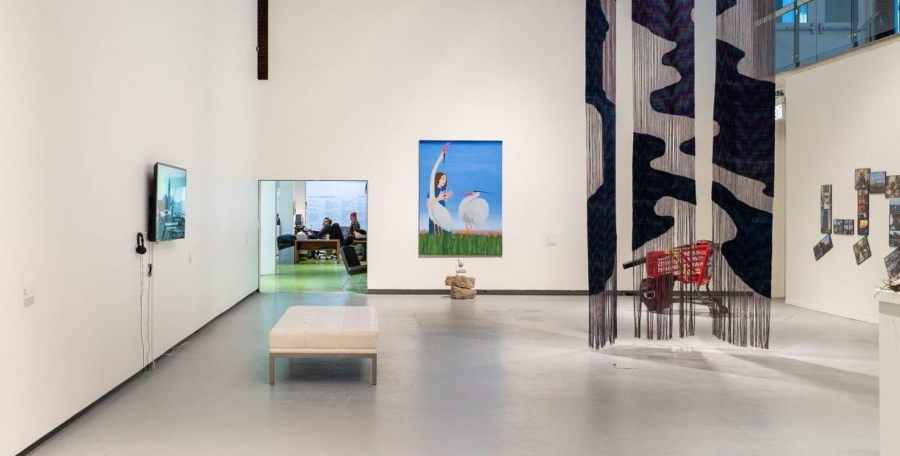

Mutuality Exhibition: Performances and Talks
Explore the Mutuality exhibition through an interactive public program where artists in the Center Program share their ideas, processes, and inspirations through short talks, an installation activation, and audio and haptic performances.
Performances by:
Amethyst J. Davis
Josué Esaú
Dawn Liddicoatt
Talks by:
Jalen Hamilton
Juan Molina Hernández